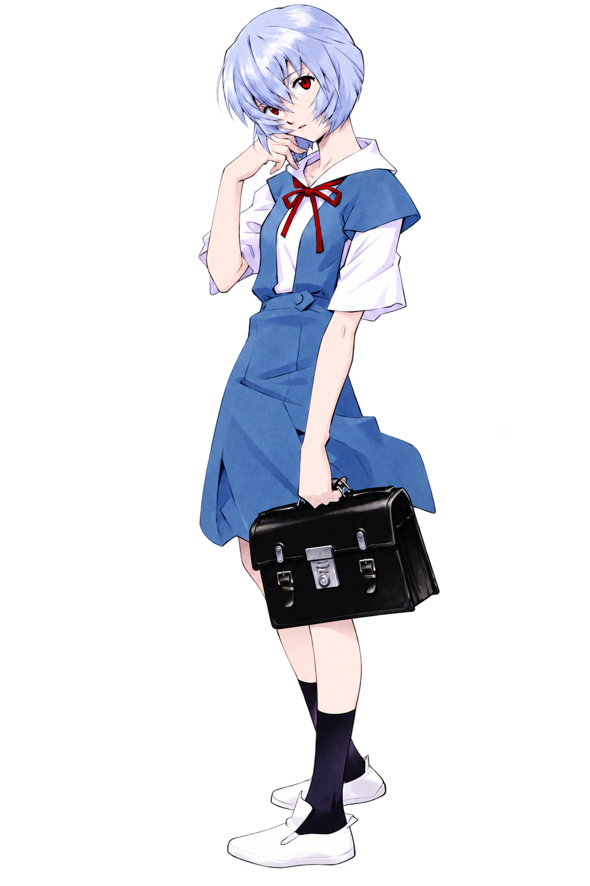

PERSONAL RECORD READY
REI.SYSPERSONAL CHANNEL 00
EMOTIONAL SIGNAL
DETECTED
INITIALIZING PRIVATE TRANSMISSION...
00% / CALIBRATION
SUBJECT 00 PRIVATE TRANSMISSION
A signal
for Maureen
A feeling that grew quietly, recorded between small conversations and simple moments that always seemed to matter.
UNKNOWN EMOTION / DO NOT ERASE

HERO PORTRAITassets/rei-hero.png
DRAG THE BLUE SIGNAL TOWARD THE PINK TARGET
MMaureen
SIGNAL DISTANCE / 100
PHASE 01 SIGNAL CONTACT
Two signals.
One act of courage.
ROTARY FREQUENCY TUNER
STANDBY / SEARCHING
ROTATE THE DIAL TO MATCH FREQUENCIES
FREQ / 0.00 MHz
TARGET / 142.80 MHz
00%SIGNAL STABILITY
Rotate the dial to align the two waveforms.
PHASE 02 PERSONAL OBSERVATION
Small things that
stayed on record.
RECORD 01 / 05OBS-01
MOVE THE RADAR LENS TO DISCOVER MEMORY ECHOES
N
S
E
W
ARCHIVE PROGRESS / 0 / 5
HISTORY SIGNAL DEVELOPMENT
From unfamiliar
to meaningful.
MILESTONE 01 / 05
SCROLL DOWN TO TRAVEL THROUGH THE SIGNAL JOURNEY
The first quiet spark
100
FIELD
PHASE 04 A.T. FIELD RESONANCE
A message that has
been held back.
A barrier is not always rejection—it can simply protect something until the time feels right.
RELEASE THE PULSE WHEN IT ALIGNS WITH THE GREEN WINDOW
PULSE READY / TIMING CRITICAL
UNSENT MESSAGE / RECOVEREDPRIVATE
TO Maureen
A message beyond
the interface.
GUIDE THE MAGNETIC ORB TO RECONSTRUCT THE LETTER
MESSAGE FRAGMENT 00 / 03
— Ayyash
§ 01
§ 02
§ 03
TARGET
RECONSTRUCTION / READY
HEART SIGNAL A QUESTION FROM AYYASH
Maureen, can I get to
know you more?
Every quiet signal on this page carries one honest truth: knowing you made ordinary days feel brighter. There is no pressure and no promise you have to make—only Ayyash asking for a chance to know you more, one sincere conversation at a time.
RESPONSE CHANNEL / WAITING
ANSWER RECEIVED TWO SIGNALS / ONE BEGINNING
AM
Your answer reached
Ayyash.
Ayyash has shared the words he kept quietly in his heart. Now the next words can be yours—tell him what this message made you feel.
REPLY TO AYYASH ON WHATSAPPOPEN PRIVATE CHAT / +62 857-8894-9082 WHATSAPP WILL OPEN WITH YOUR MESSAGE PREPARED. NOTHING IS SENT UNTIL YOU PRESS SEND.